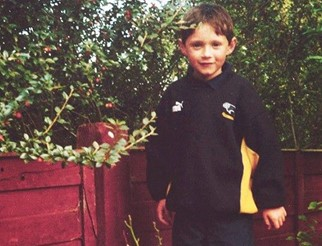
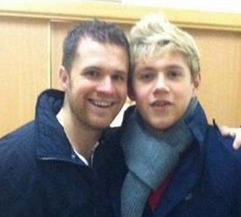
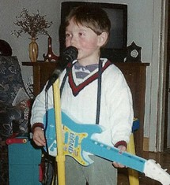
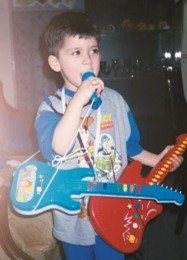
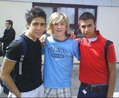

Niall James Horan
historia jego dzieciństwa
Niall dorastał w małym miasteczku Mullingar w środkowej części Irlandii,
zamieszkałym przez około 35 tysięcy ludzi. Mieszkał najpierw przy ulicy
w centrum miasta, a potem, w wieku czterech lat, przeniósł się do domu
za miastem. Pierwszym wspomnieniem Niall’a jest wyjazd na wakacje do
cioci do Nowego Jork’u. Kolejnym z jego najwcześniejszych wspomnień jest
jazda na plastikowym traktorku po jego ulicy. Nie mieszkało tam za wiele
dzieci w jego wieku… w sumie to był tam tylko on jego brat i koledzy
brata. Niall pamięta także jak rozciął bratu głowę paletka do
ping-pong’a!
Jego rodzice się rozeszli, kiedy miał 5 lat. Przez jakiś czas poszedł z
bratem mieszkać u mamy. Potem przez kilka dni mieszkali to u mamy to u
taty, w końcu przeprowadzili się na stałe do taty, ponieważ mieszkam w
mieście, więc Niall miał tam więcej kolegów i było wygodniej ze względu
na szkołę…
Zawsze był niski jak na swój wiek, ale na szczęście nigdy nie wyzywali
go w szkole, bo starał się być dla wszystkich koleżeński. Zawsze był
gotowy na wygłupy dlatego był w dobrych stosunkach z większością dzieci.

Jego pierwszy dzień w zerówce był koszmarny. Mama go przywiozła i
rozpłakał się zaraz po tym, jak wyszła, bo nie chciał tam zostawać.
Miał pięć lat i żaden z jego kolegów nie chodził do tej samej szkoły
co on, więc strasznie się bał pozostawiony sam sobie. Szybko jednak
się przyzwyczaił i naprawdę polubiłem szkołę. Podobało mu się już tam
aż do samego końca, oprócz odrabiania pracy domowej, czego nie znosił,
i ogólnie oprócz nauki, do której się za bardzo nie przykładał.
Z rodzeństwa ma tylko jednego brata Grega, który aktualnie ma 34 lata i
pracuje w lokalnym sklepie niedaleko domu. W dzieciństwie nienawidzili
się. Wspomina go z tamtego okresu jako wkurzającego starszego braciszka,
a on mnie pamięta jako wkurzającego młodszego braciszka. Nie znosił,
nawet kiedy tylko na niego spojrzał, i cały czas się prali, co nie
wychodziło Naill’lowi na zdrowie, bo brat był znacznie starszy i
większy. Starał się udawać ważniaka i kumplować z wszystkimi jego
znajomymi i to też go rozwścieczało. Do czasu gdy skończył 13 lat, Greg
skończył szkołę i znalazł sobie pracę. Obaj znacznie dojrzeli i wtedy
dopiero zaczęli się ze sobą dogadywać.

Niall w styczności z muzyką
Od najmłodszych lat ciągnęło go do muzyki. W szkole grało się na flecie,
więc zaczął grać w wieku jakichś pięciu, sześciu lat i potem coraz
bardziej go to wciągało. Zawsze śpiewał podczas wieczoru kolędowego w
podstawówce, a gdy skończył osiem lat, jego nauczycielka śpiewu pani
Caulfield stwierdziła, że powinien spróbować dostać się do chóru
miejskiego.

Każdy w jego rodzinie pamięta, że zawsze Niall coś sobie podśpiewywał.
Jego ciocia przylatywała co roku w lecie z Ameryki i jeździli na wakacje
do Galway w zachodniej Irlandii. Kiedyś śpiewał po drodze Gartha
Brooksa, siedząc z tyłu w samochodzie, i jego ciocia powiedziała, że
myślała, że to gra radio. Dokładnie taka sama rzecz zdarzyła się z
Michaelem Bublé. Kiedyś nucił White Christmas, siedząc na tylnej kanapie
samochodu, i tak jego tata odkrył, że Michael potrafi śpiewać. Michael
to absolutny idol Niall’a. Jego ciocia twierdzi, że od tamtej pory
zawsze wiedziała, że Horan będzie kiedyś sławny, i powtarzała mu to
przez całe dzieciństwo, ale nigdy nie zwracał na to specjalnie uwagi.
W wieku około 12 lat zaczął grać na gitarze, a rok później wystąpiłem na
szkolnym pokazie talentów, śpiewając „The Man Who Can't Be Moved The
Script”. Jego kolega Kieron akompaniował mu na gitarze. Co prawda nie
był to żaden konkurs, ale opisano występ Horan’a dość obszernie w
miejscowej gazecie, bo był ktoś od nich na pokazie i robił zdjęcia. Dało
mu to trochę odwagi, żeby iść dalej, i po tym doświadczeniu wziął udział
w niewielkim lokalnym konkursie, znów z Kieron’em, gdzie zaśpiewałem
„With You Chrisa Browna”. Ku zdumieniu Niall’a wygrał konkurs, zaczął
się więc zastanawiać, czy może to rzeczywiście prawda, że śpiewanie mu
nieźle wychodzi.
Na małej scence zwanej The Academy wystąpił jako suport Lloyda Danielsa,
który brał udział w X Factorze w 2009. Powiedział mu, że też zamierza
wystartować, ale nie wydawał się specjalnie przekonany do tego pomysłu.
Potem pojawił się któregoś razu na widowni podczas występów 1D na żywo i
wpadli na siebie. Przypomniał sobie Niall’a i zawołał: „Widzisz? A nie
mówiłem ci, żebyś się zdecydował?" Ale nie mówił!
W listopadzie przed startem w X Factorze wziął udział w lokalnym
przedstawieniu Stars in Their Eyes. Zaśpiewał „l'm Yours” Jasona Mraza-
bardzo „leniwy wybór", jak skomentowałby Simon Cowell - i świetnie
poszło. Niall wypadł naprawdę dobrze i znowu odnotowano o nim w prasie.
To była bardzo przydatna wprawka na przyszłość.
Zawsze ciągnęła go muzyka pop, od kiedy był naprawdę mały. Bardzo lubił
Westlife i jeździł na ich koncerty, tak że do Horan’a niesamowicie było
ich poznać w X Factorze i móc z nimi pogadać. To fantastyczni faceci,
dokładnie tacy, jak sobie wyobrażał. Pełny luzik i realizm. Jest w tym
coś irlandzkiego!

Horan w szkole
W szkole był całkowitym tumanem z matmy, ale dobry z francuskiego. Mieli
wielkie boisko, więc zawsze uprawiał jakieś sporty i pochłaniało mu to
dużo czasu. Nie miał zacięcia naukowego, ale myślał, że był
inteligentny, tylko po prostu za dużo czasu schodziło mu na głupotach.
Uważał, że szkoła jest dobra jedynie do wariowania i wydurniania się.

Chłopak pamięta lekcję geografii pierwszego dnia w szkole średniej.
Wszyscy jego znajomi znaleźli się w innych klasach, więc wydawało mu
się, jakby zaczynał od zera, bo nikogo nie znał. Nagle chłopak za nim,
Nicky, pierdnął i Niall się roześmiał, i tak zostali przyjaciółmi. Od
tamtej pory byli najlepszymi kumplami. Siadali z tyłu klasy i nucili
tradycyjne pieśni irlandzkie razem z jeszcze jednym kolegą, który też
miał na imię Niall, a nauczyciele się wściekali. Zawsze robili coś
takiego, żeby się nawzajem rozśmieszyć. Nigdy Niall nie wpadł jednak w
poważne kłopoty oprócz jednego razu, kiedy zwiali ze szkoły i ich
przyłapano. Wszystkim porządnie zmyli za to głowę!
Przez wszystkie lata w szkole Horan miał znośne stopnie, chociaż
nauczyciele zawsze przekonywali, że ma duży potencjał. Ale zanadto
zaprzątały mu wygłupy i kopanie z kolegami w piłkę, żeby miał się
naprawdę zabrać do roboty. Jeden z nauczycieli powiedział jego mamie, że
siedząc w klasie, zawsze przebywa w jakimś swoim świecie.
W pierwszych latach szkoły nie miał żadnej dziewczyny, bo nie widział
sensu wiązania się, kiedy się ma 10 lat. Zresztą zawsze był trochę
nieśmiały w tych sprawach. Pierwszy raz się pocałował, gdy miał jakieś
11 lat, ale chyba wymazał to sobie z głowy, bo wypadło tak fatalnie. Do
dziś nie jest pewny czy można to nazwać pocałunkiem. Miał dziewczynę,
kiedy skończył 13 lat, ale nie byli ze sobą zbyt długo. Od tamtej pory
nie chodził z wieloma. Do 2011 nie miał jeszcze prawdziwej przyjaciółki,
ale chętnie zacząłby z kimś chodzić, gdyby pojawiła się odpowiednia
dziewczyna.
na koniec
Niall ma aktualnie 27 lat. W 2010 wziął udział w brytyjski programie X
Factor , gdzie stworzony przez programu zespół zajął w finale 3 miejsce.
Po sukcesie medialnym grupa podpisała kontrakt z wytwórnią Syco Music
jako zespół One Direction. Wraz z 1D (One Direction) wydał pięć albumów
które do dzisiaj cieszą się wielką sławą. W 2016 podpisał kontrakt z
wytwórnią Capitol Records, jako artysta solowy. Jego debiutancki album
solowy „Flicker”, został wydany 20 października 2017. 13 marca 2020 roku
wydał swój drugi album zatytułowany „Heartbreak Weather”.